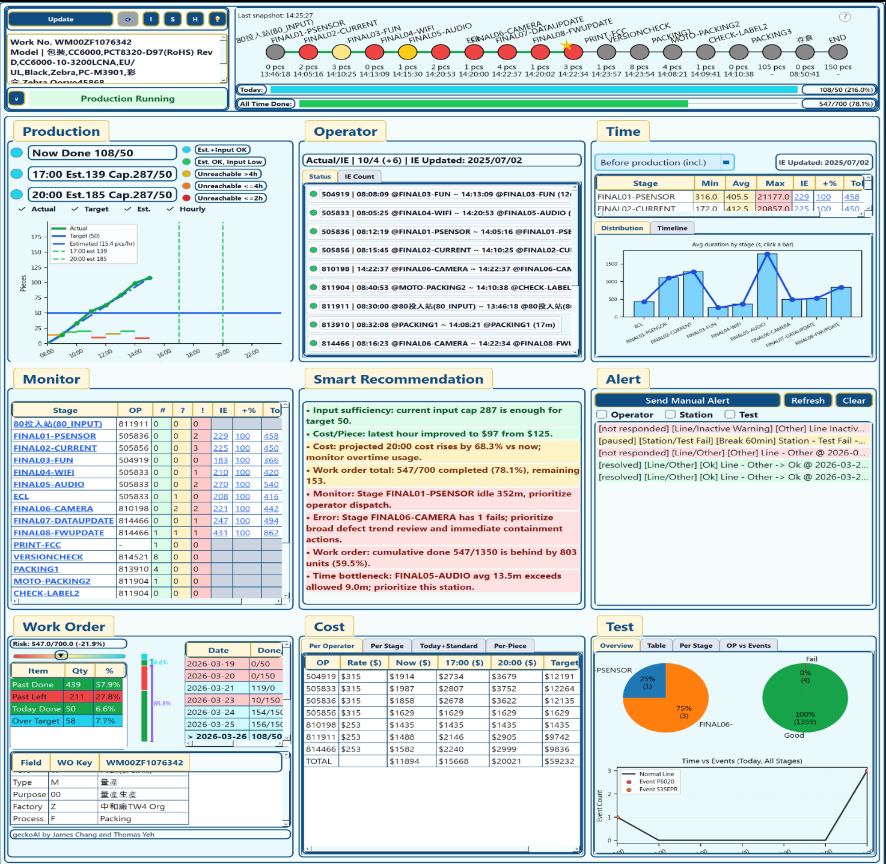

Monitor running, off-duty, hold, idle, and issue-stop conditions with one dashboard view.
Global Smart Production Monitoring System
Monitor work orders, stations, operators, alerts, and production risk from one connected production view.
Global Smart Production Monitoring System is a desktop manufacturing operations platform that connects production activity, station records, operator status, planning data, historical work-order data, test history, and alert logic into one monitoring workflow so supervisors, engineering teams, and cross-functional stakeholders can react faster and manage production with clearer visibility.
- Realtime dashboard for current status, WIP, target progress, and last activity
- Automatic alerts for idle time, station overtime, test failure, and schedule mismatch
- Daily and all-time report views for output, workforce, cost, error codes, utilisation, and route-history analysis
Core Monitoring Flow
Dashboard
Track realtime line status, work orders, WIP, and target progress
Alerts
Detect idle operators, overdue station time, failures, and delay risk
Analysis
Compare standard vs actual workforce, time, cost, and capacity
Reports
Generate daily and long-range HTML-style production reports
Example Monitoring Data
| Item | Example Data |
|---|---|
| Work Order | WM00ZF1076342 |
| Current Status | In Production |
| Now Done | 108 / 50 pcs |
| 17:00 Estimate | 139 Cap / 287 / 50 |
| 20:00 Estimate | 185 Cap / 287 / 50 |
| All Time Progress | 1050 / 216 (0) |
| Current Cost | $47,700 (78.1%) |
| Operator Summary | Actual / IE: 10 / 4 (+6) |
| Alert Example | [not responded] FINAL08-FWUPDATE timeout line |
| Recommendation | Prioritize FINAL06-CAMERA and FINAL05-AUDIO |
Compare planned vs actual production, route progress, and delay risk with status indicators.
Track standard vs actual manpower, projected labour cost, and cost per output trend.
Review station-level test error code records, timing patterns, and operator correlations.
Product Overview
One interface for production visibility, historical review, communication, and reporting.
Unified Factory Data View
Bring together schedule workbooks, work-order files, snapshot and history CSVs, serial and route records, test-event files, and settings workbooks in one desktop workflow.
Live and Historical Analysis
Review what is happening now and what happened over time at the work-order, stage, operator, station, and test-result levels without switching systems.
Operational Communication
Use alerts, daily summaries, and interactive communication flows to keep supervisors, IE, engineering, and management aligned around the same work-order context.
Shareable Outputs
Generate structured HTML reports for daily updates, all-time review, and stakeholder sharing outside the app.
Platform Capabilities
A monitoring platform built around visibility, response, and production decision support.
Dashboard and Work-Order View
Browse dates, filter work orders, review current status, update time, WIP quantity, production target, actual output, route context, and work-order details from one dashboard.
Station and DUT Traceability
Track station records, log per-SN history, review DUT movement, and inspect time-based station activity for traceability, bottleneck analysis, and repeated failure review.
Capacity and Workforce Monitoring
Compare actual vs standard workforce, current operator status, projected hourly output, and production capacity risk throughout the day.
Cost and Utilisation Analysis
Estimate workforce cost, cost per station, cost per piece, and utilisation trends to support IE, manufacturing, and management decisions.
Function Screens
Move over each labeled dashboard area to see what that section does.

Dashboard Main View
Shows the main monitoring screen with hoverable labels for header flow, production, operator, time, monitor, recommendation, alert, work order, cost, and test views.
Monitoring Workflow
From raw production activity to alerts, analysis, and action.
Collect live and reference production data
Capture work-order activity, station timing, operator records, WIP movement, test results, planning references, and retained history files.
Compare actual vs expected state
Check schedule alignment, target output, standard workforce, operation time, tolerance thresholds, and station behaviour.
Trigger alerts and evaluate risk
Raise alerts for operator idle time, station timeout, test failure, scheduling mismatch, and production delay risk.
Review reports and improve decisions
Use dashboard views and HTML-style reports to support supervisor response, balancing, maintenance, training, planning decisions, and stakeholder communication.
Detailed Modules
The product covers multiple production-management views, not just a single dashboard.
Dashboard Module
- Date selection and work-order filtering
- Current status, update, settings, and day or total report switching
- Current WIP pcs, last activity time, output, station, route flow, and work-order details
Output and Capacity Module
- Actual output versus target output
- Projected hourly output and end-of-day capacity estimation
- Risk-indicator view for schedule achievement and overtime need
Workforce Module
- Actual versus standard workforce status
- Operator states such as in production, idle, and away
- Operator timing, activity history, and flexible manpower evaluation
Operation-Time Module
- Station minimum, average, and maximum operation time
- Standard time and tolerance settings for automatic warning logic
- Operation-time distribution and hourly output distribution by station
Alert Module
- Scheduled work order not started
- Operator idle beyond allowed time
- Station operation timeout and station test failure
- Supervisor notification and response history recording
Error and Trace Module
- Per-SN route history and station records
- Daily test error code records and abnormal time-period identification
- Error code correlation with operators, stations, fail count, and repeated-failure patterns
Cost Module
- Projected workforce cost for now, 17:00, 20:00, and target completion time
- Projected operation cost per station and per trial
- Total workforce cost range and hourly cost per DUT trend
Utilisation and Suggestion Module
- Operator and machine utilisation review
- Station balancing and idle-time evaluation
- Suggestion-oriented analysis for training, maintenance, and layout improvement
Alerts and Intelligence
Realtime alert logic is one of the core parts of the product.
Automatic Alert System
Trigger alerts when scheduled work orders are not started, operators stay idle too long, station operation exceeds standard time, or tests fail.
- Supports multi-level supervisor notification logic and Discord-based follow-up flows
- Creates response records for follow-up and analysis
Risk Assessment
Use status lights, projected output, hourly capacity comparison, and work-order history to estimate production delay risk and overtime need.
- Compares actual output against target and expected capacity
- Supports frontline production judgement with visual signals
Intelligent Production Insights
Combine people, machines, materials, planning, process, and environment data to guide operator assignment, maintenance timing, and abnormal handling.
- Supports operator suitability and training evaluation
- Supports machine maintenance and high-defect material warning
Department Value
The system is meant to connect multiple departments through one production data layer.
Manufacturing
Compare actual capacity versus planning schedule, review work-order achievement, track idle operators and DUT buildup, and manage frontline response to risk alerts.
Industrial Engineering
Use real production time, station balance, operator allocation, and workforce variance to improve standard settings, line balancing, and manpower planning.
Engineering and TE
Review machine-level abnormal history, error-code patterns, longest test time, re-test tendencies, and maintenance reminders before issues become larger failures.
Planning and Management
Compare planned work orders versus actual line activity, monitor output-delay risk, estimate labour cost, and support production decisions with visualised summary data.
Test and Quality Teams
Review failure patterns, test timing, station-level error codes, and work-order history to support problem isolation and process improvement.
Reporting Scope
The product is designed to generate rich production reports, not just a live screen.
Based on the provided report examples and product materials, the reporting layer covers daily and long-range views for work-order details, daily production, monitor tables, alerts, test history, operation time, operator records, cost, utilisation, and suggestion-style evaluation.
Typical Monitoring Topics
Dashboard
Current status / WIP pcs / Last activity
Production
Target vs actual / hourly capacity / delay risk
Workforce
Actual vs standard manpower / operator status
Quality
Test errors / error codes / station records
Cost
Projected workforce cost / cost per station / per DUTReport Breakdown
The report structure already supports a deep production review format.
Work Order Details
Work-order number, model, part, production stage, line status, route stages, and descriptive context.
Daily Production
Production table, target comparison, hourly capacity, actual output, and output history.
Monitor Records
Monitor table, stage graph gallery, station overview, WIP state, and time-based operator records.
Alert Records
Automatic alert logs, response records, production delay risk views, and work-order risk indicators.
Test and Error Records
Error-code logging, pie charts, event timelines, operator correlations, and station error summaries.
Time, Operator, Cost, and Utilisation
Operation-time tables, operator counts, labour cost, per-station cost, cost-per-piece, and utilisation evaluation.
Automation and Setup
Built to fit Excel-heavy factory workflows while extending communication and delivery automation.
Excel-Driven Configuration
Control work-order decoding, labour rates, IE settings, stage definitions, and communication mappings through Excel workbooks so teams can adapt the system without pushing every rule into code.
Mail and File Workflow Automation
Sync production-related mail attachments, extract line, model, and work-order context, and feed that information back into the monitoring workflow.
Discord, Gmail, and Drive Integration
Support alert delivery, daily summaries, interactive operational messaging, Gmail-based report sending, and Google Drive fallback when shared files are too large for direct email attachment.
Technical Stack
Built with Python and PySide6, using Matplotlib for visualization, OpenPyXL for Excel integration, and structured HTML dashboards for reporting outputs.
User Manual
The product manual is included directly in this website package.
PDF Manual
Global Smart Production Monitoring System - User Manual
Open the PDF manual for product overview, detailed functions, workflow guidance, and operating reference for the monitoring system.
Contact
For production monitoring demos, dashboard customization, or report design discussion, please get in touch.
This product is aimed at manufacturing supervisors, IE, engineering, planning, and management teams that need clearer realtime visibility and production reporting.
Product Contact
Email GeckoAI Team
Discuss monitoring workflows, alert rules, data integration, and reporting requirements.
geckoai.contact@gmail.com Send EmailThe button opens your default email app with the recipient already filled in.